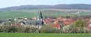
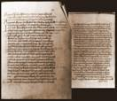
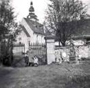
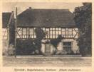
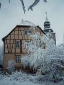
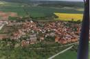
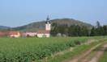
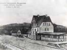

|
|
|
 Großmonra
 Hedenurkunde  altes Friedhofstor  Uschmanns Laden  altes Pfarrhaus  Luftaufnahme  Großmonra mit Meisel  Bahnhof
|
Großmonra hat mit den Ortsteilen Backleben und Burgwenden zusammen 1050 Einwohner. Vor- und frühgeschichtliche Funde rund um das Dorf belegen, dass die Gegend bereits seit der Jungsteinzeit besiedelt war. Vor fast 1300 Jahren am 01. Mai des Jahres 704, wurde der Ort erstmalig mit drei anderen Orten in einer Urkunde im Zusammenhang mit Güterübertragungen des Herzogs
Heden II. an den Bischof Willibord von Utrecht genannt. Drei Kilometer nördlich der Ortslage befand sich die Monraburg. Sie zählte zu den ur- und frühgeschichtlich bedeutendsten Wallburganlagen Thüringens. Im Laufe der Jahrtausende versank diese Anlage. Aber noch heute sind trotz Überwucherungen von Büschen und Bäumen die Konturen des Befestigungssystems noch recht deutlich erkennbar. Die Deutung des Ortsnamens ist schwierig, da es sich um einen sehr alten Namen handelt. Es ist möglich, dass der Bachname "mon", die Bezeichnung der Berg "mont" oder nicht zuletzt die Monraburg namensgebend gewesen sein könnten. Der Ort litt oft unter Bränden. Im Jahre 1749 brannten 102 Wohnhäuser, Ställe und Scheunen nieder. 1756 vernichtete ein Brand 160 Wohnhäuser, 111 Scheunen und 121 Ställe. Auch von Pestepedemien, besonders 1591 und 1597, berichtet die Überlieferung. Bis in das frühe 19. Jahrhundert gehörten Ort und Flur fast ausschließlich geistlichen Grundherren. Lange war das Dorf Zentrum eines Besitzkomplexes des Erzbistums Mainz. Später verfügten die Erfurter Stifter St. Severie und St. Marien hier über zahlreiche Güter. Die weltliche Gerichtsbarkeit wurde lange Zeit durch die Grafen von Beichlingen wahrgenommen. Die Grundsteinlegung der ev. Kirche St. Peter und Paul erfolgte am 01.Juni 1688. Mit der Aufsetzung des Turmknopfes am 25.Oktober 1690 wurde der Bau abgeschlossen. 1789 wurde eine Restaurierung des Turmes vorgenommen. Eine weitere Restaurierung des Kirchenschiffes sowie der Bau des Treppenhauses an der Westseite. 1870. Die drei Glocken, die sich im Turm befinden, wurden zu unterschiedlichen Zeiten eingebaut, die kleine Glocke 1760, die mittlere und große Glocke 1855. 1966 wurde die Turmspitze umgebaut und erneuert. Von 1990 bis 1999 erfolgten im Innern der Kirche umfangreiche Verputz- und Malerarbeiten sowie der Einbau eines elektrischen Uhrwerkes. Der Erwerbszweig der Einwohner ging in den letzten Jahrhunderten hauptsächlich auf Ackerbau, Viehzucht und zeitweise auch auf Weinanbau zurück. In den letzten fünfzig Jahren änderte sich das Dorfbild und auch die Tätigkeitsbereiche der im Ort wohnenden Menschen. So wird heute die Landwirtschaft nur nebenberuflich betrieben. Die berufstätige Bevölkerung arbeitet größten Teils außerhalb Großmonras.
|